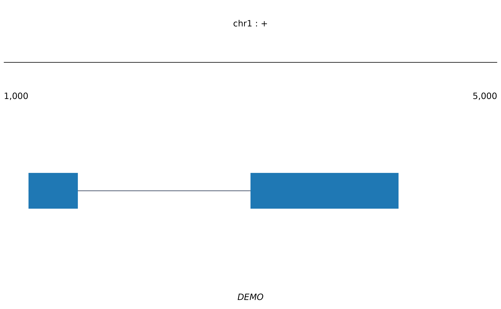

Returns the bottom panel of a sashimi figure as a standalone ggplot: the
coordinate bar, the transcript models, and any features. Called by
plot_sashimi(), but exported so the panel can be used on its own or
restyled before being assembled.
Usage
sashimi_annotation(
x,
locus = NULL,
xlim = NULL,
map = NULL,
base_size = 9,
base_family = "",
hairline = 0.3,
role_fill = NULL,
feature_color = OM_FEATURE_FILL,
chrom_style = c("keep", "ucsc", "ensembl"),
show_coord_bar = TRUE,
coord_ticks = TRUE,
show_tx_label = FALSE,
show_features = TRUE,
show_apex = TRUE,
show_gene_label = TRUE,
collapse = FALSE,
arrow_bins = 0,
theme = NULL
)Arguments
- x
A
sashimi_dataobject.- locus
A
locus_idor gene name. Defaults to the first locus.- xlim
Plot-space x limits. Defaults to the locus window, widened by
psi_pad.- map
An
intron_map()to draw in compressed coordinates, orNULL.- base_size
Base font size in points.
- base_family
Font family for every piece of text in the figure. The empty string uses the graphics device's default. Text geoms do not inherit a theme's family, so this is threaded to each of them explicitly.
- hairline
Line width for the coordinate bar and intron lines.
- role_fill
Named vector of fills keyed by model
role.- feature_color
Fill for the feature boxes.
- chrom_style
How the contig name is printed above the coordinate bar:
"keep"(the default) prints it exactly as the data has it,"ucsc"ensures achrprefix,"ensembl"strips one.- show_coord_bar
Draw the coordinate bar and window end labels.
- coord_ticks
Intermediate tick marks on the coordinate bar, labelled with the genomic coordinate each plot position maps back to.
TRUE(the default) draws them only when introns are compressed, where an axis with just two labelled ends would imply an even scale that is not there. Pass a number for that many ticks, orFALSEfor none.- show_tx_label
Print each transcript's identifier at the left of its row.
- show_features
Draw the
featuresslot.- show_apex
Mark
main_apex/alt_apexfrom thelocislot with a downward triangle.- show_gene_label
Print the gene name, in italic, under the models.
- collapse
Draw one merged row per
roleinstead of one row per transcript. Useful when an annotation has thirty isoforms and only the reference/alternative distinction matters.- arrow_bins
Number of strand arrowheads to place along each intron line.
0disables them.- theme
A ggplot2 theme, or
NULLfortheme_omakase().
Examples
sd <- sashimi_data(
loci = data.frame(locus_id = "a", gene_name = "DEMO", chrom = "chr1",
strand = "+", win_lo = 1000, win_hi = 5000),
models = data.frame(locus_id = "a", tx_id = "tx1", role = "main",
start = c(1200, 3000), end = c(1600, 4200))
)
sashimi_annotation(sd)
